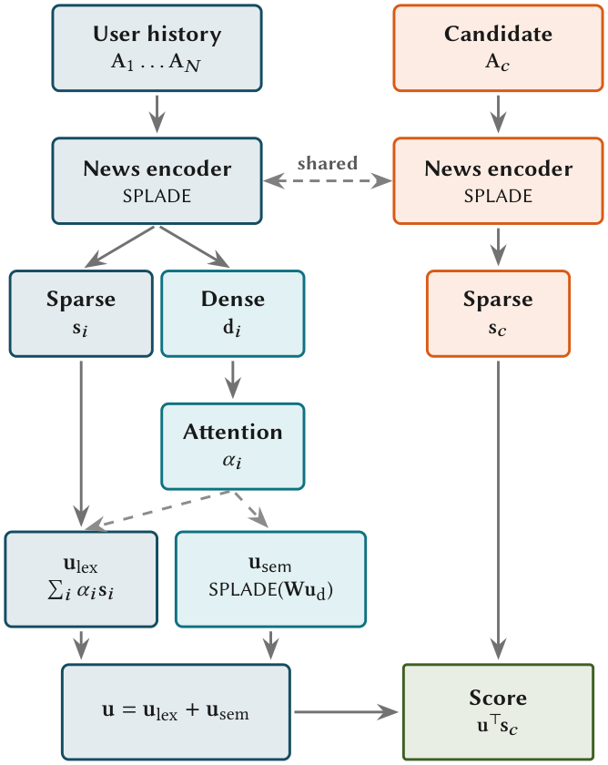

LSNR: Learned Sparse News Recommendations with Attentive User Modeling (基于注意力用户建模的稀疏新闻推荐)
- 会议/期刊: SIGIR-AP 2026
- 作者与机构: David Vos (University of Amsterdam), Andrew Yates (Johns Hopkins University), Maarten de Rijke (University of Amsterdam)
- 推荐链路定位: 召回
- 研究方向: 协同过滤与双塔召回 / 序列与会话推荐
- 论文原文: https://arxiv.org/abs/2610.23510v1
- 开源代码: https://github.com/davidvos/learned-sparse-news-recs
TL;DR (1分钟核心速览)
新闻推荐中，现有学习稀疏检索推荐器 STAR 将用户历史拼接为单一查询串，导致两个瓶颈：多兴趣被压平为无差别查询，且长文新闻迅速撑爆语言模型上下文窗口被迫截断。LSNR 改为独立编码每篇文章，再用加性注意力加权聚合各文章稀疏向量（词汇通路）并叠加稠密投影的 SPLADE 扩展（语义通路），构成稀疏用户向量。在 MIND/EBNeRD 的 impression 级排序协议下，NDCG@10 较 STAR 分别提升 11% 与 10%，短历史（N=1）场景反超 NRMS/NAML 等稠密 SOTA，且索引体积比未压缩稠密基线小一个数量级。
Background & Motivation (背景与核心矛盾)
- 主流范式: 新闻推荐以内容驱动的双塔稠密编码为主（NRMS/NAML/LSTUR），用户侧用注意力聚合历史；学习稀疏检索（SPLADE 系）在 ad hoc 检索中已证明可与稠密检索抗衡，但仅 STAR 将其引入推荐。
- 前人局限: STAR 把历史拼成一个字符串，(i) 无法区分各交互的重要性，多兴趣坍缩为扁平查询；(ii) 新闻为长文，拼接数篇即超出 512 token 上下文，截断严重损伤质量。EBNeRD 上 STAR 的 NDCG@10 仅比无监督 BM25 高不到 1 个点，MRR 甚至更低（0.3459 vs. 0.3503），说明拼接机制在长文场景近乎失效。
- 核心洞察 (Key Insight): 两个瓶颈同源——STAR 缺乏"从文章集合构造用户"的专用机制。若改为逐篇独立编码，则候选文章表示与用户无关、可离线预计算，且用户建模粒度回到单篇文章。
- 本文切入点: 用"独立编码 + 学习式注意力聚合 + 双通路稀疏构造"替换历史拼接，同时解决兴趣坍缩与上下文窗口两个问题。
Method (核心方法设计)
1. 整体框架 (Overall Architecture)
共享新闻编码器（BERT + 一层可训练 Transformer + SPLADE 投影）将每篇文章映射为稀疏向量 \(\mathbf{s}\)，历史文章额外产出均值池化稠密向量\(\mathbf{d}\)。用户编码器先对历史稠密向量做一层无位置编码的上下文化，再用加性注意力得到权重\(\alpha_i\)；随后双通路构造稀疏用户向量：词汇通路按\(\alpha_i\)加权求和各文章稀疏向量，语义通路对注意力加权后的稠密用户表示施加 SPLADE 投影。最终用户向量\(\mathbf{u}=\mathbf{u}_{lex}+\mathbf{u}_{sem}\)，候选文章仅用稀疏向量\(\mathbf{s}_c\)与\(\mathbf{u}\) 做内积打分，经倒排索引检索。候选表示可离线预计算，推理时仅需用户侧聚合。
flowchart TD
A["用户历史文章 A1..AN"] --> B["共享新闻编码器 SPLADE"]
B --> C["稀疏 s_i / 稠密 d_i"]
C --> D["上下文化 + 加性注意力 α_i"]
D --> E["词汇通路 u_lex = Σ α_i s_i"]
D --> F["语义通路 u_sem = SPLADE(Σ α_i d_i)"]
E --> G["u = u_lex + u_sem"]
F --> G
G --> H["与候选 s_c 稀疏内积打分"]
2. 关键设计拆解 (Key Designs)
-
双通路稀疏用户构造（核心创新）：痛点在于单一通路要么只有逐篇词项信号、要么只有聚合语义。词汇通路 \(\mathbf{u}_{lex}=\sum_{i=1}^{N}\alpha_i\mathbf{s}_i\)保留可追溯到具体文章的词项证据；语义通路\(\mathbf{u}_{sem}=\log(1+\mathrm{ReLU}(\mathbf{W}_{vocab}\sum_i\alpha_i\tilde{\mathbf{d}}_i))\)激活任何单篇文章扩展中都不存在、但聚合兴趣指向的词项。两通路共享同一注意力权重与词表投影\(\mathbf{W}_{vocab}\)，不引入额外可学习参数，却编码互补信号（消融显示单通路性能几乎相同，合并后提升 11%+）。
-
加性注意力聚合（替代拼接与池化）：\(e_i=\mathbf{q}^\top\tanh(\mathbf{W}_a\tilde{\mathbf{d}}_i+\mathbf{b}_a)\)，\(\alpha_i=\exp(e_i)/\sum_j\exp(e_j)\)。关键在于用稠密表示判断"哪次交互重要"、用稀疏表示承载"交互内容"，二者解耦；且刻意省略位置编码——实验证明加入 PE 反而掉点（MIND 0.4234→0.4086），与"新闻中严格时序是弱信号"的既有结论一致。
-
训练目标、负采样与推理效率：以稀疏内积 \(\mathbf{u}^\top\mathbf{s}_c\)为打分、softmax 交叉熵为损失，并施加 LFLOPS 正则（\(\lambda_n=0.005\)作用于文章、\(\lambda_u=0.0005\)作用于用户向量）。稀疏模型采样 16 个负例（稠密模型 4 个即饱和）。文章稀疏度仅 22.8/31.6 NNZ，用户向量 722/563 NNZ（<3% 词表），推理时按 top-\(K\) 剪枝；用户编码 0.97 ms，端到端较 STAR 快 2.3×（MIND）/10×（EBNeRD）。
Experimental Setup & Evaluation Protocol (实验设置与评估协议)
- 数据集与预处理: 均用官方 "small" 版本；因官方测试集无公开标签，采用惯例以官方验证集作测试、从训练集末 10% 采样做调参。
| 数据集 | #Users (Train/Val/Test) | #Items | #Interactions | 平均历史长 | 文章平均词数 |
|---|---|---|---|---|---|
| MIND | 48,052 / 11,995 / 50,000 | 49,476–65,238 | 212,481 / 15,697 / 73,152 | 32–39 | 45.0 (标题+摘要) |
| EBNeRD | 14,834 / 6,637 / 15,342 | 7,317–9,985 | 210,402 / 23,289 / 244,647 | 46–47 | 465.9 (含正文) |
- 数据划分与防穿越 (Splitting Strategy): 沿用数据集官方时间序划分（训练/验证/测试按时间切分），测试用官方验证 split，超参用训练集末 10%。
- 排名评测协议 (Ranking Protocol): Impression 级排序——在每个曝光日志内对共同展示的文章排序，点击为正、同屏未点击为负，按用户平均；非全库 Full-Ranking。全库检索仅用于索引体积与延迟测量，不用于精度。
- 对比基线与超参设置: 稀疏侧 BM25、STAR（按 recency 选历史填满 512 token）；稠密侧 NRMS、NAML、LSTUR（均换 BERT 骨干）。英文用
bert-base-uncased，丹麦文用danish-bert-botxo；冻结 12 层中前 9 层；AdamW，学习率网格 \(\{10^{-6},10^{-5},10^{-4}\}\)；指标 NDCG@10/5、MRR，双尾配对 t 检验\(p<0.01\)。
Key Experimental Results (实验关键数据)
1. 主实验对比 (Main Results)
vs. 稀疏基线（全历史）
| Method | MIND N@10 | MIND N@5 | MIND MRR | EBNeRD N@10 | EBNeRD N@5 | EBNeRD MRR |
|---|---|---|---|---|---|---|
| BM25 | 0.3142 | 0.2541 | 0.2480 | 0.4639 | 0.3868 | 0.3503 |
| STAR | 0.3815 | 0.3191 | 0.2973 | 0.4704 | 0.3925 | 0.3459 |
| LSNR | 0.4234 | 0.3620 | 0.3310 | 0.5200 | 0.4547 | 0.4027 |
| Improv. vs STAR | +11.0% | +13.4% | +11.3% | +10.5% | +15.8% | +16.4% |
vs. 稠密 SOTA（全历史 / 短历史 N=1，NDCG@10）
| Method | MIND Full | EBNeRD Full | MIND N=1 | EBNeRD N=1 |
|---|---|---|---|---|
| NRMS | 0.4256 | 0.5290 | 0.3536 | 0.4880 |
| NAML | 0.4247 | 0.5312 | 0.3301 | 0.4889 |
| LSTUR | 0.3794 | 0.5114 | 0.2806 | 0.4496 |
| LSNR | 0.4234 | 0.5200 | 0.3626 | 0.5022 |
| Improv. (N=1) | — | — | +2.5% vs NRMS | +2.7% vs NAML |
2. 消融实验 (Ablation Study)
通路消融（NDCG@10）
| 配置 | MIND Full | MIND Short | EBNeRD Full | EBNeRD Short |
|---|---|---|---|---|
| 仅 \(\mathbf{u}_{lex}\) | 0.3784 | 0.3565 | 0.4734 | 0.4717 |
| 仅 \(\mathbf{u}_{sem}\) | 0.3805 | 0.3578 | 0.4868 | 0.4848 |
| 双通路（完整） | 0.4234 | 0.3626 | 0.5200 | 0.5022 |
聚合函数消融（固定 \(\mathbf{u}_{sem}\)，NDCG@10）
| 方法 | MIND Full | MIND Short | EBNeRD Full | EBNeRD Short |
|---|---|---|---|---|
| 加性注意力 | 0.4234 | 0.3626 | 0.5200 | 0.5022 |
| 注意力 + 位置编码 | 0.4086 | 0.3582 | 0.5120 | 0.4917 |
| 平均池化 | 0.4020 | 0.3513 | 0.5082 | 0.4895 |
| 时间衰减 | 0.3990 | 0.3516 | 0.5048 | 0.4920 |
| 最大池化 | 0.4138 | 0.3575 | 0.4996 | 0.4843 |
3. 关键实验发现 (Key Findings)
- 增益并非来自"避免截断"：在 N=1 的短历史设定下 STAR 与 LSNR 输入完全相同、无截断，LSNR 仍领先 3.6%（MIND）与 7%+（EBNeRD），说明收益源自逐篇表示的学习信号差异——STAR 优化单一拼接串，LSNR 让每篇文章表示直接接收用户向量梯度，数据稀缺时泛化更好。
- 双通路互补而非冗余：单通路之间差距 ≤0.014 NDCG@10，但合并后在 MIND 全历史较 \(\mathbf{u}_{lex}\)-only 提升 11.9%、较\(\mathbf{u}_{sem}\)-only 提升 11.3%，证明词汇证据与用户级语义扩展编码了不同侧面。
- 稀疏度与数据集特性强耦合：MIND 上剪枝越狠精度越低，EBNeRD 上反而越剪越准（长历史累积宽词表，剪枝起去噪作用）；同时 STAR 在 EBNeRD 上文档稀疏度达 440.4 NNZ（LSNR 仅 31.6），索引 33.55 MB vs. 2.41 MB，差约 14×，印证拼接训练信号会把文档编码器推向宽而散的表示。
Highlights & Limitations (亮点、对比与审稿批判)
- 与代表作对比 (vs. Prior Work): 与 STAR 的本质区别是"用户表示的单位"——STAR 以整段拼接串为单位，LSNR 以单篇文章为单位再做学习式聚合；与 NRMS 的区别是聚合发生在稀疏词表空间而非稠密空间，因而获得倒排索引与词项可解释性；与 BM25 的区别是具备 SPLADE 式语义扩展能力。
- 可迁移亮点: (i) "稠密定权重、稀疏载内容"的解耦聚合范式可迁移到任何长文本历史场景（如长视频、文档推荐）；(ii) 候选侧表示与用户无关、可离线预计算，是稀疏召回天然的工程优势。
- 审稿级局限批判: (i) 全历史下 EBNeRD 仍落后 NRMS/NAML 2–3%，优势集中在短历史，适用边界较窄；(ii) 稠密基线未做量化压缩，索引体积对比并非公平下界，且 HNSW 在延迟上实际优于倒排检索，效率卖点仅在"索引小"而非"检索快"；(iii) MIND 上 STAR 用了检索预训练 checkpoint 而 LSNR 用原生 BERT，初始化不对称（虽有利于 STAR，但比较未完全受控）；(iv) 仅两个小规模、双语种基准，泛化性待验证。
Rating (四维评分)
- 方法创新性 (Novelty): ⭐⭐⭐ （双通路稀疏用户构造思路清晰且参数零增量，但本质是 SPLADE+注意力聚合的合理组合，理论新意中等）
- 评估协议与实验扎实度 (Protocol & Experiments): ⭐⭐⭐⭐ （五阶段评估设计严谨，N=1 控制实验巧妙隔离截断混淆，消融完整，但仅 impression 级排序、缺全库排序精度）
- 写作与数学规范度 (Clarity & Rigor): ⭐⭐⭐⭐ （公式简洁、符号统一，通路互补性论证清楚，复杂度与稀疏度统计到位）
- 工业落地与复现价值 (Industrial & Practical Value): ⭐⭐⭐⭐ （代码开源、索引小一个数量级、用户编码毫秒级，短历史新用户场景直接契合新闻平台痛点）